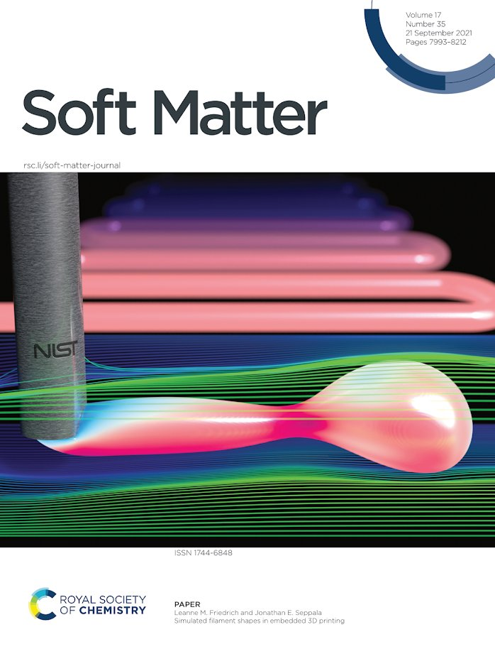
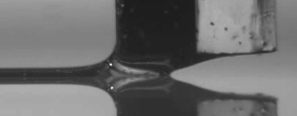

Current work
Material Measurement Laboratory, National Institute of Standards and Technology
(2020-2022) NRC Postdoc, (2022-present) Research engineer
How can we achieve high-quality prints in embedded 3D printing?

In order to 3D print organs and tissues, we need a way to print soft, squishy materials. Conventional polymer 3D printing techniques require inks to have certain rheological behaviors, where they behave like solids when sitting still and liquids when flowing. Embedded 3D printing lets us print low-viscosity, soft materials with a wide range of rheological properties. Instead of printing onto a flat plate, we submerge the print nozzle into a bath of support material, which holds the printed part in place until it is cured. However, this new technique introduces new defects. Where conventional direct ink writing produces filaments that are short and wide, embedded 3D printing often makes filaments that are tall and narrow. Roughness, rupture, contraction, swelling, poor adhesion between lines, and disruption of printed structures can all lead to poor quality prints. Using experiments and simulations, we identify why defects appear, so we can produce more reliable, higher quality prints.
Simulations: what controls filament defects?
Experiments: how can we suppress filament defects?

Simulations: how can we protect cells in the nozzle?

Graduate work
(2020) Ph.D., Materials, University of California Santa Barbara
How can we control the properties of 3D printed composites?

Dissertation
In recent years, there has been an explosion of new 3D printing techniques and printable materials. My graduate research focused on a new multi-material 3D printing technique that can print inks with tailorable properties. This means we could create parts that have variations in stiffness, strength, or electrical conductivity with only a single pot of ink.
In direct ink writing with acoustophoresis, we use sound waves inside of a print nozzle to align and move particles inside of the nozzle. This means that the sound waves are a design tool! For example, if there are carbon fibers inside of the nozzle, the sound waves can align the fibers and pack them together, making the part stiffer. If we remove the sound waves, the fibers randomly orient themselves, making the part more compliant. By turning the sound waves on and off during a print, we can create parts that bend where we want them to bend, and stay rigid where we want them to be rigid.
How can we control particle placement in a filament?
How do we prevent filaments from breaking up?
How do filaments interact with each other?
Why does particle placement depend on direction?
How do printed filaments change at corners?
Undergraduate work
(2015) B.S., Materials Science and Engineering, Northwestern University
How can we design better biomolecule sensors?
Internship at Rush University, 2015
One way to design microfluidic biomolecule sensors is by attaching a receptor to a charge-sensitive surface such as a transistor. When the molecule of interest binds to the receptors, the transistor reports a change in voltage. Through simulations, we find that using electrolytes with large, monovalent cations will improve the sensitivity of this type of sensor.
What do chitons see?
Senior Thesis at Northwestern University, 2015

Chitons are a type of mollusk which live in tidal zones and have a shell composed of aragonite, a phase of calcium carbonate. The shell of the chiton Acanthopleura granulata is dotted with eye-like structures called ocelli. The ocelli have lenses made of aragonite, making the chiton one of only three known species to use crystalline lenses for vision. Using microscopy and simulations, we explore how this unique lens grows and may allow chitons to see.